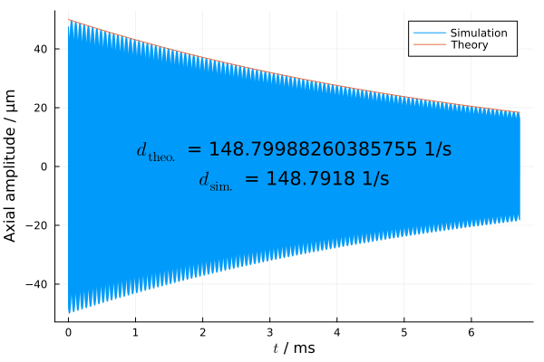

Ion detection: Noiseless resistor
In this validation study, the damping of a single ion stored inside a Penning trap when a resistor is connected to one of the electrodes is simulated.
The theoretical damping time constant is given by
\[d = \frac{q^2\,R}{2\,m\,D_\textnormal{eff}^2}\,,\]
to which we are going to compare the damping of the simulated axial motion against.
This validation study checks for
- correct conversion between ion velocity and current induced onto electrode.
- correct implementation of effective electrode distance.
- correct conversion from induced image current to voltage on electrode within the circuit cosimulation.
- correct backaction force onto ion resulting from the voltage on the Penning trap electrode.
using Penning
using Plots
const OVERSAMPLING = 20;Trap parameters
In this simulation, only the axial motion is of interest, which is why the $B_0$ coefficient can be set to an arbitrary vakue
const U₀ = -50.0
const c₂ = -14960.0
const B₀ = 7.0Effective electrode distance $D_\textnormal{eff}$ and resistance $R$
const D_eff = 5e-3
const R = 100e6
ion = Ion(187, 30)
omega_c, omega_p, omega_m, omega_z = calc_eigenfrequencies(U₀, c₂, B₀, ion.q, ion.m)Theoretical damping time constant
d_theory = ion.q^2*R/ion.m/D_eff^2 / 2
println("Theoretical damping time constant: $(d_theory) 1/s")Simulation setup
trap = Trap(
fields = (
IdealTrapField(U₀, c₂, B₀),
),
particles = (
ParticleCollection(ion, [[0, 0, 50e-6]], [[0, 0, 0]]),
),
electrodes = (
AxialParallelPlateElectrode(D_eff),
)
)
setup = Setup(
traps = (
trap,
),
circuits = (
CircuitResistor(R, T=0.0),
),
connections = (
Connection(trap=1, electrode=1, circuit=1, circuit_pin=1),
)
)
sim = Simulation(
setup,
dt=2*pi/omega_z/OVERSAMPLING,
output_writers=(
MemoryWriter(PositionComponentObservable(1, 1, 1, 3), IterationInterval(4)),
)
)
run!(sim, run_until_time=1/d_theory)
z = sim.output_writers[1].mem
t = sim.output_writers[1].t
plot(t*1e3, z*1e6, label="Simulation")
harminv_results = harminv(t, z, omega_z/2/pi-10e3, omega_z/2/pi+10e3)
A = harminv_results[1].amp
d = harminv_results[1].decay_const
println("Simulated decay constant: $(d) 1/s")
theory = 2*A*exp.(-t*d_theory)
plot!(t*1e3, theory*1e6, label="Theory")
xlabel!("\$t\$ / ms")
ylabel!("Axial amplitude / µm")
annotate!(1/d_theory/2*1e3, 5, "\$d_\\textnormal{theo.}\$ = $(d_theory) 1/s")
annotate!(1/d_theory/2*1e3, -5, "\$d_\\textnormal{sim.}\$ = $(d) 1/s")
savefig(joinpath(@__DIR__, "resistor_noiseless.png"))Results

This page was generated using Literate.jl.